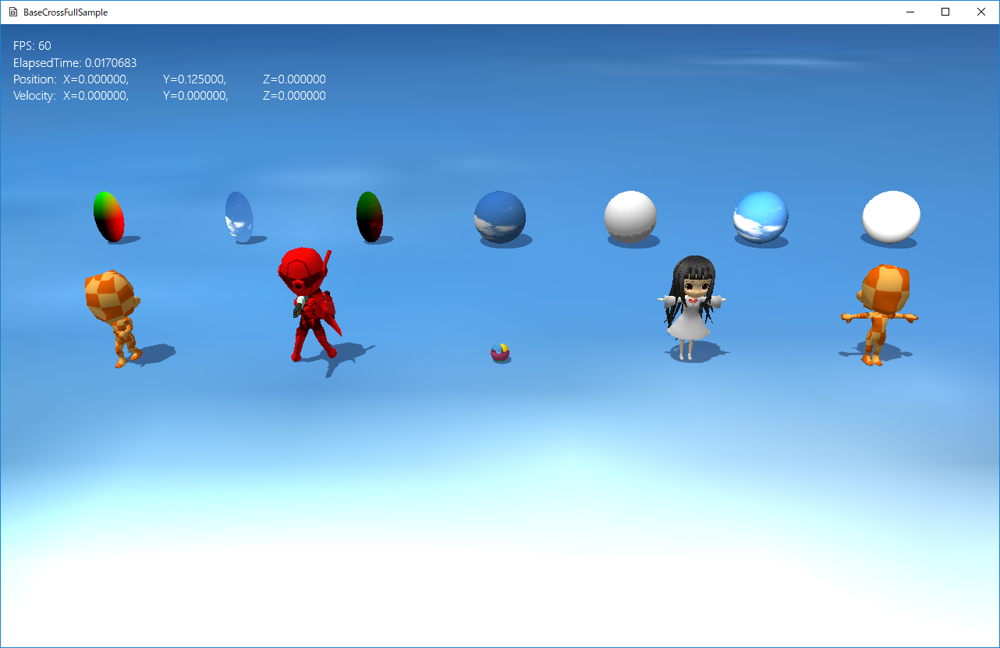
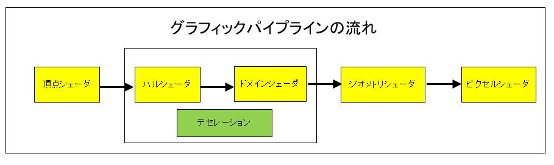

図0403a
このサンプルはシンプルな３Ｄ表現のサンプルです。１、基本色（PNTフォーマットは法線ライティング）にデフューズ（拡散光）を掛ける。 ２、１にエミッシブ色を足す ３、PNTフォーマットはスペキュラーを足す ４、３を基本色とし、テクスチャがある場合はサンプリングした値に３を掛ける。 ５、影がある場合は影要素を掛ける

図0403b
この中で頂点シェーダとピクセルシェーダは必須なシェーダです。
//ビューのカメラの設定
auto PtrLookAtCamera = ObjectFactory::Create<LookAtCamera>(10.0f);
void PcSphere::OnCreate() {
auto PtrTrans = GetComponent<Transform>();
PtrTrans->SetScale(Vec3(1.0f, 1.0f, 1.0f));
Quat Qt;
Qt.identity();
PtrTrans->SetQuaternion(Qt);
PtrTrans->SetPosition(m_StartPos);
//描画コンポーネント
auto PtrDraw = AddComponent<PCStaticDraw>();
vector<VertexPositionNormalTexture> vertices;
vector<VertexPositionColor> new_vertices;
vector<uint16_t> indices;
MeshUtill::CreateSphere(1.0f,18, vertices, indices);
for (size_t i = 0; i < vertices.size(); i++) {
VertexPositionColor new_v;
new_v.position = vertices[i].position;
new_v.color = Col4(
new_v.position.x * 2.0f,
new_v.position.y * 2.0f,
new_v.position.z * 2.0f,
1.0f);
new_vertices.push_back(new_v);
}
PtrDraw->CreateOriginalMesh(new_vertices, indices);
PtrDraw->SetOriginalMeshUse(true);
//影をつける
auto ShadowPtr = AddComponent<Shadowmap>();
ShadowPtr->SetMeshResource(PtrDraw->GetOriginalMeshResource());
}
PtrDraw->CreateOriginalMesh(new_vertices, indices);
PtrDraw->SetOriginalMeshUse(true);
//影をつける
auto ShadowPtr = AddComponent<Shadowmap>();
ShadowPtr->SetMeshResource(PtrDraw->GetOriginalMeshResource());
//--------------------------------------------------------------------------------------
///頂点を変更する行動クラス
//--------------------------------------------------------------------------------------
class VertexBehavior : public Behavior {
float m_TotalTime;
public:
//--------------------------------------------------------------------------------------
/*!
@brief コンストラクタ
@param[in] GameObjectPtr このコンポーネントを所持するゲームオブジェクト
*/
//--------------------------------------------------------------------------------------
VertexBehavior(const shared_ptr<GameObject>& GameObjectPtr) :
Behavior(GameObjectPtr),
m_TotalTime(0)
{}
//--------------------------------------------------------------------------------------
/*!
@brief デストラクタ
*/
//--------------------------------------------------------------------------------------
virtual ~VertexBehavior() {}
//--------------------------------------------------------------------------------------
/*!
@brief 伸び縮みする
@tparam T 頂点の型
@return なし
*/
//--------------------------------------------------------------------------------------
template<typename T>
void ExpandAndContract() {
float ElapsedTime = App::GetApp()->GetElapsedTime();
m_TotalTime += ElapsedTime;
if (m_TotalTime >= XM_2PI) {
m_TotalTime = 0;
}
auto PtrDraw = GetGameObject()->GetDynamicComponent<StaticBaseDraw>();
const vector<T>& BackupVec = PtrDraw->GetOriginalMeshResource()->GetBackupVerteces<T>();
vector<T> new_vec;
for (auto& v : BackupVec) {
T new_v;
new_v = v;
auto Len = (sin(m_TotalTime) * 0.5f) + 1.0f;
new_v.position.x *= Len;
new_v.position.z *= Len;
new_vec.push_back(new_v);
}
PtrDraw->UpdateVertices(new_vec);
}
};
auto PtrDraw = GetGameObject()->GetDynamicComponent<StaticBaseDraw>();
void PcSphere::OnUpdate() {
auto Beh = GetBehavior<VertexBehavior>();
Beh->ExpandAndContract<VertexPositionColor>();
}
//初期化
void PntSpSphere::OnCreate() {
auto PtrTrans = GetComponent<Transform>();
PtrTrans->SetScale(Vec3(1.0f, 1.0f, 1.0f));
Quat Qt;
Qt.identity();
PtrTrans->SetQuaternion(Qt);
PtrTrans->SetPosition(m_StartPos);
//影をつける
auto ShadowPtr = AddComponent<Shadowmap>();
ShadowPtr->SetMeshResource(L"DEFAULT_SPHERE");
//描画コンポーネント
auto PtrDraw = AddComponent<PNTStaticDraw>();
PtrDraw->SetSpecular(Col4(1.0f, 1.0f, 1.0f, 1.0f));
PtrDraw->SetMeshResource(L"DEFAULT_SPHERE");
if (m_TextureUse) {
PtrDraw->SetTextureResource(L"SKY_TX");
}
}
void Scene::CreateResourses() {
wstring DataDir;
//サンプルのためアセットディレクトリを取得
App::GetApp()->GetAssetsDirectory(DataDir);
//各ゲームは以下のようにデータディレクトリを取得すべき
//App::GetApp()->GetDataDirectory(DataDir);
//中略
auto ModelMesh = MeshResource::CreateBoneModelMesh(DataDir, L"Chara_R.bmf");
App::GetApp()->RegisterResource(L"Chara_R_MESH", ModelMesh);
auto StaticModelMesh = MeshResource::CreateStaticModelMesh(DataDir, L"Character_01.bmf");
App::GetApp()->RegisterResource(L"MODEL_MESH", StaticModelMesh);
}
//初期化
void BoneChara::OnCreate() {
//初期位置などの設定
auto Ptr = AddComponent<Transform>();
Ptr->SetScale(0.5f, 0.5f, 0.5f);
Ptr->SetRotation(0.0f, 0.0f, 0.0f);
Ptr->SetPosition(m_StartPos);
Mat4x4 SpanMat; // モデルとトランスフォームの間の差分行列
SpanMat.affineTransformation(
Vec3(1.0f, 1.0f, 1.0f),
Vec3(0.0f, 0.0f, 0.0f),
Vec3(0.0f, 0.0f, 0.0f),
Vec3(0.0f, 0.0f, 0.0f)
);
//影をつける（シャドウマップを描画する）
auto ShadowPtr = AddComponent<Shadowmap>();
//影の形（メッシュ）を設定
ShadowPtr->SetMeshResource(L"Chara_R_MESH");
ShadowPtr->SetMeshToTransformMatrix(SpanMat);
//描画コンポーネントの設定
auto PtrDraw = AddComponent<PNTBoneModelDraw>();
//描画するメッシュを設定
PtrDraw->SetMeshResource(L"Chara_R_MESH");
PtrDraw->SetMeshToTransformMatrix(SpanMat);
PtrDraw->AddAnimation(L"Default", 0, 50, true, 20.0f);
PtrDraw->ChangeCurrentAnimation(L"Default");
//透明処理
SetAlphaActive(true);
}
//更新
void BoneChara::OnUpdate() {
//アニメーションを更新する
auto PtrDraw = GetComponent<PNTBoneModelDraw>();
float ElapsedTime = App::GetApp()->GetElapsedTime();
PtrDraw->UpdateAnimation(ElapsedTime);
}
//初期化
void StaticChara::OnCreate() {
//初期位置などの設定
auto Ptr = AddComponent<Transform>();
Ptr->SetScale(0.5f, 0.5f, 0.5f);
Ptr->SetRotation(0.0f, 0.0f, 0.0f);
Ptr->SetPosition(m_StartPos);
Mat4x4 SpanMat; // モデルとトランスフォームの間の差分行列
SpanMat.affineTransformation(
Vec3(1.0f, 1.0f, 1.0f),
Vec3(0.0f, 0.0f, 0.0f),
Vec3(0.0f, 0.0f, 0.0f),
Vec3(0.0f, 0.0f, 0.0f)
);
//影をつける（シャドウマップを描画する）
auto ShadowPtr = AddComponent<Shadowmap>();
//影の形（メッシュ）を設定
ShadowPtr->SetMeshResource(L"MODEL_MESH");
ShadowPtr->SetMeshToTransformMatrix(SpanMat);
auto PtrDraw = AddComponent<PNTStaticModelDraw>();
PtrDraw->SetMeshResource(L"MODEL_MESH");
PtrDraw->SetMeshToTransformMatrix(SpanMat);
}